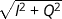

The Spectrum View enables spectral analysis of the RF signal received from the antenna. The user can choose between visualizing the RF spectrum, the raw IF samples or a histogram distribution of the samples. The represented frequency band can be selected at the top of the window. The user can also determine whether the values must be averaged before visualization or not, and the number of values that must be included in the average. For the histogram distribution the user can choose to visualize the I and Q samples or . The user can also choose to normalize the histogram.
On the RF spectrum the user can see at which frequency interference is present (the peaks in the plot). From the raw samples the user can see pulsed interference. If the Septentrio Receiver is heavily jammed the I and Q samples histograms will not show a gaussian distribution and the histogram will not show a chi-square shape distribution.